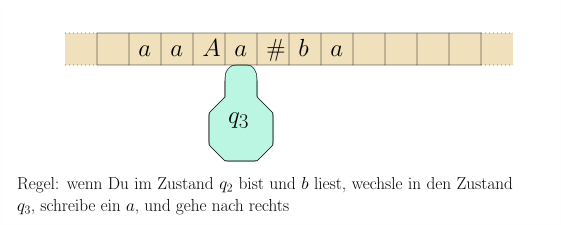
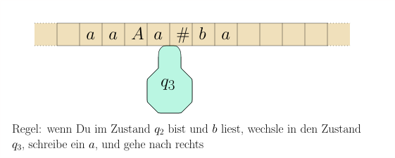
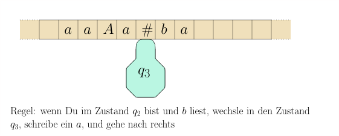
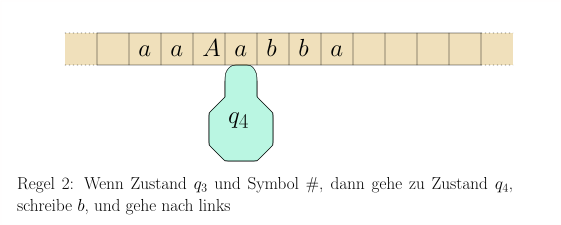
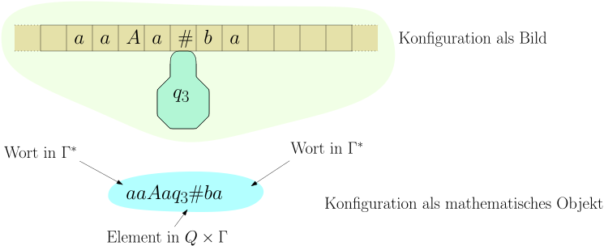
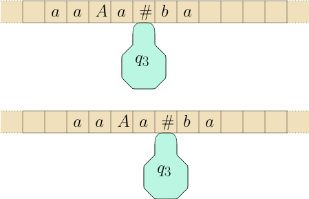
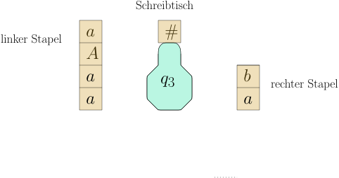

8.1 Turingmaschinen: Formale Definition und Beispiele./course1/wly/08/01-Turing-machines-definition.wly:2:11
8.1 Turingmaschinen: Formale Definition und Beispiele./course1/wly/08/01-Turing-machines-definition.wly:2:11
Eine Turingmaschine besteht aus einem ./course1/wly/08/01-Turing-machines-definition.wly:4:5Band./course1/wly/08/01-Turing-machines-definition.wly:4:44,./course1/wly/08/01-Turing-machines-definition.wly:4:49 das in./course1/wly/08/01-Turing-machines-definition.wly:4:49 Zellen unterteilt ist und in beide Richtungen unbegrenzt./course1/wly/08/01-Turing-machines-definition.wly:5:5 ist, und einem ./course1/wly/08/01-Turing-machines-definition.wly:6:5Schreib-Lese-Kopf./course1/wly/08/01-Turing-machines-definition.wly:6:21../course1/wly/08/01-Turing-machines-definition.wly:6:39 Dieser befindet sich in./course1/wly/08/01-Turing-machines-definition.wly:6:39 jedem Schritt auf einer Zelle. Wie auch der endliche./course1/wly/08/01-Turing-machines-definition.wly:7:5 Automat oder der Kellerautomat hat die Turingmaschine einen./course1/wly/08/01-Turing-machines-definition.wly:8:5 internen ./course1/wly/08/01-Turing-machines-definition.wly:9:5Zustand./course1/wly/08/01-Turing-machines-definition.wly:9:15../course1/wly/08/01-Turing-machines-definition.wly:9:23 In jedem Schritt liest die Maschine das./course1/wly/08/01-Turing-machines-definition.wly:9:23 Zeichen, das sich in der aktuellen Zelle des Bandes./course1/wly/08/01-Turing-machines-definition.wly:10:5 befindet (dort, wo der Kopf steht). Abhängig vom gelesenen./course1/wly/08/01-Turing-machines-definition.wly:11:5 Zeichen ./course1/wly/08/01-Turing-machines-definition.wly:12:5$s$./course1/wly/08/01-Turing-machines-definition.wly:12:13 und dem internen Zustand ./course1/wly/08/01-Turing-machines-definition.wly:12:16$q$./course1/wly/08/01-Turing-machines-definition.wly:12:42 schreibt die./course1/wly/08/01-Turing-machines-definition.wly:12:45 Turingmaschine ein neues Symbol ./course1/wly/08/01-Turing-machines-definition.wly:13:5$s'$./course1/wly/08/01-Turing-machines-definition.wly:13:37 in die Zelle,./course1/wly/08/01-Turing-machines-definition.wly:13:41 wechselt in einen neuen Zustand ./course1/wly/08/01-Turing-machines-definition.wly:14:5$q'$./course1/wly/08/01-Turing-machines-definition.wly:14:37 und bewegt den Kopf./course1/wly/08/01-Turing-machines-definition.wly:14:41 um maximal eine Zelle, also nach link, rechts, oder gar./course1/wly/08/01-Turing-machines-definition.wly:15:5 nicht../course1/wly/08/01-Turing-machines-definition.wly:16:5

course1/public/img/turing-machines/exampe-1/02.svg
course1/public/img/turing-machines/exampe-1/03.svg
course1/public/img/turing-machines/exampe-1/04.svg
course1/public/img/turing-machines/exampe-1/08.svgSie können sich das Band auch als Magnetband vorstellen,./course1/wly/08/01-Turing-machines-definition.wly:29:5 das nach vorn oder nach hinten gespult wird, anstatt dass./course1/wly/08/01-Turing-machines-definition.wly:30:5 der Kopf sich bewegt. Am Anfang steht auf dem Band das./course1/wly/08/01-Turing-machines-definition.wly:31:5 ./course1/wly/08/01-Turing-machines-definition.wly:32:5Eingabewort./course1/wly/08/01-Turing-machines-definition.wly:32:6 und der Kopf auf dem ersten Symbol dieses./course1/wly/08/01-Turing-machines-definition.wly:32:18 Wortes. Die Turingmaschine wendet nun ihre Regeln an, bis./course1/wly/08/01-Turing-machines-definition.wly:33:5 Sie einen ./course1/wly/08/01-Turing-machines-definition.wly:34:5Endzustand./course1/wly/08/01-Turing-machines-definition.wly:34:16 erreicht. Bei./course1/wly/08/01-Turing-machines-definition.wly:34:27 ./course1/wly/08/01-Turing-machines-definition.wly:35:5Entscheidungsproblemen./course1/wly/08/01-Turing-machines-definition.wly:35:6,./course1/wly/08/01-Turing-machines-definition.wly:35:29 wo uns nur eine Ja/Nein-Antwort./course1/wly/08/01-Turing-machines-definition.wly:35:29 interessiert, wird die Antwort durch den Entzustand./course1/wly/08/01-Turing-machines-definition.wly:36:5 angegeben: der Zustand ./course1/wly/08/01-Turing-machines-definition.wly:37:5$\qaccept$./course1/wly/08/01-Turing-machines-definition.wly:37:28 entspricht einem ./course1/wly/08/01-Turing-machines-definition.wly:37:38Ja./course1/wly/08/01-Turing-machines-definition.wly:37:57,./course1/wly/08/01-Turing-machines-definition.wly:37:60 ./course1/wly/08/01-Turing-machines-definition.wly:37:60 der Zustand ./course1/wly/08/01-Turing-machines-definition.wly:38:5$\qreject$./course1/wly/08/01-Turing-machines-definition.wly:38:17 entspricht einem ./course1/wly/08/01-Turing-machines-definition.wly:38:27Nein./course1/wly/08/01-Turing-machines-definition.wly:38:46../course1/wly/08/01-Turing-machines-definition.wly:38:51 Diese zwei./course1/wly/08/01-Turing-machines-definition.wly:38:51 Endzustände reichen im Allgemeinen aus. Wenn wir von der./course1/wly/08/01-Turing-machines-definition.wly:39:5 Maschine eine komplexere Ausgabe als Ja/Nein erwarten, so./course1/wly/08/01-Turing-machines-definition.wly:40:5 betrachten wir als ./course1/wly/08/01-Turing-machines-definition.wly:41:5Ausgabe der Turingmaschine./course1/wly/08/01-Turing-machines-definition.wly:41:25 den Inhalt./course1/wly/08/01-Turing-machines-definition.wly:41:52 des Bandes zu dem Zeitpunkt, da die Maschine den Zustand./course1/wly/08/01-Turing-machines-definition.wly:42:5 ./course1/wly/08/01-Turing-machines-definition.wly:43:5$\qaccept$./course1/wly/08/01-Turing-machines-definition.wly:43:5 erreicht. Was brauchen wir also, um so eine./course1/wly/08/01-Turing-machines-definition.wly:43:15 Turingmaschine und ihre Arbeitsweise zu beschreiben?./course1/wly/08/01-Turing-machines-definition.wly:44:5
Definition 8.1.1 (Turingmaschine)../course1/wly/08/01-Turing-machines-definition.wly:46:5 Eine Turingmaschine besteht aus./course1/wly/08/01-Turing-machines-definition.wly:47:28 folgenden Elementen:./course1/wly/08/01-Turing-machines-definition.wly:48:9
Einem endlichen Eingabe-Alphabet ./course1/wly/08/01-Turing-machines-definition.wly:52:17$\Sigma$./course1/wly/08/01-Turing-machines-definition.wly:52:50 . Dies sind die./course1/wly/08/01-Turing-machines-definition.wly:52:58 Symbole, die für das Eingabewort in Frage kommen../course1/wly/08/01-Turing-machines-definition.wly:53:17
Einem endlichen Bandalphabet ./course1/wly/08/01-Turing-machines-definition.wly:56:17$\Gamma$./course1/wly/08/01-Turing-machines-definition.wly:56:46;./course1/wly/08/01-Turing-machines-definition.wly:56:54 das sind die./course1/wly/08/01-Turing-machines-definition.wly:56:54 Symbole, die auf dem Band stehen dürfen. Offensichtlich./course1/wly/08/01-Turing-machines-definition.wly:57:17 muss ./course1/wly/08/01-Turing-machines-definition.wly:58:17$\Sigma \subseteq \Gamma$./course1/wly/08/01-Turing-machines-definition.wly:58:22 gelten. Jede Zelle kann./course1/wly/08/01-Turing-machines-definition.wly:58:47 genau ein Zeichen aus ./course1/wly/08/01-Turing-machines-definition.wly:59:17$\Gamma$./course1/wly/08/01-Turing-machines-definition.wly:59:39 enthalten. Darüberhinaus./course1/wly/08/01-Turing-machines-definition.wly:59:47 gibt es noch das sogenannte Blanksymbol./course1/wly/08/01-Turing-machines-definition.wly:60:17 ./course1/wly/08/01-Turing-machines-definition.wly:61:17$\square \in \Gamma \setminus \Sigma$./course1/wly/08/01-Turing-machines-definition.wly:61:17../course1/wly/08/01-Turing-machines-definition.wly:61:54 Dies zeigt an, dass./course1/wly/08/01-Turing-machines-definition.wly:61:54 die Zelle im Moment leer ist. Im obigen Beispiel ist die./course1/wly/08/01-Turing-machines-definition.wly:62:17 Zelle links vom ersten ./course1/wly/08/01-Turing-machines-definition.wly:63:17$a$./course1/wly/08/01-Turing-machines-definition.wly:63:40 beispielsweise leer. Am Anfang./course1/wly/08/01-Turing-machines-definition.wly:63:43 steht auf dem Band also ein Eingabewort ./course1/wly/08/01-Turing-machines-definition.wly:64:17$w \in \Sigma^*$./course1/wly/08/01-Turing-machines-definition.wly:64:57 ./course1/wly/08/01-Turing-machines-definition.wly:64:73 und rechts und links davon unendlich viele ./course1/wly/08/01-Turing-machines-definition.wly:65:17$\square$./course1/wly/08/01-Turing-machines-definition.wly:65:60 ./course1/wly/08/01-Turing-machines-definition.wly:65:69 -Symbole../course1/wly/08/01-Turing-machines-definition.wly:66:17
Einer endliche Menge ./course1/wly/08/01-Turing-machines-definition.wly:69:17$Q$./course1/wly/08/01-Turing-machines-definition.wly:69:38 an inneren Zuständen. Dies./course1/wly/08/01-Turing-machines-definition.wly:69:41 entspricht in etwa den Prozessor-Registern eines Computers../course1/wly/08/01-Turing-machines-definition.wly:70:17 Ein Zustand ./course1/wly/08/01-Turing-machines-definition.wly:71:17$\texttt{start} \in Q$./course1/wly/08/01-Turing-machines-definition.wly:71:29 ist der Startzustand,./course1/wly/08/01-Turing-machines-definition.wly:71:51 in welchem sich die Maschine zu Beginn befindet../course1/wly/08/01-Turing-machines-definition.wly:72:17
Einer Zustandsübergangsfunktion ./course1/wly/08/01-Turing-machines-definition.wly:75:17$\delta$./course1/wly/08/01-Turing-machines-definition.wly:75:49,./course1/wly/08/01-Turing-machines-definition.wly:75:57 die sagt, was./course1/wly/08/01-Turing-machines-definition.wly:75:57 die Turingmaschine tun soll, wenn Sie im Zustand ./course1/wly/08/01-Turing-machines-definition.wly:76:17$q$./course1/wly/08/01-Turing-machines-definition.wly:76:66 ist./course1/wly/08/01-Turing-machines-definition.wly:76:69 und Zeichen ./course1/wly/08/01-Turing-machines-definition.wly:77:17$s$./course1/wly/08/01-Turing-machines-definition.wly:77:29 liest. Formal:./course1/wly/08/01-Turing-machines-definition.wly:77:32
wobei
./course1/wly/08/01-Turing-machines-definition.wly:83:17L./course1/wly/08/01-Turing-machines-definition.wly:83:24
für
./course1/wly/08/01-Turing-machines-definition.wly:83:26gehe eine Zelle nach links./course1/wly/08/01-Turing-machines-definition.wly:83:32
./course1/wly/08/01-Turing-machines-definition.wly:83:59steht,./course1/wly/08/01-Turing-machines-definition.wly:83:59R./course1/wly/08/01-Turing-machines-definition.wly:83:67
für./course1/wly/08/01-Turing-machines-definition.wly:83:69
rechts und
./course1/wly/08/01-Turing-machines-definition.wly:84:17S./course1/wly/08/01-Turing-machines-definition.wly:84:29
für
./course1/wly/08/01-Turing-machines-definition.wly:84:31stay./course1/wly/08/01-Turing-machines-definition.wly:84:37,./course1/wly/08/01-Turing-machines-definition.wly:84:42
also die Anweisung, den Kopf./course1/wly/08/01-Turing-machines-definition.wly:84:42
nicht zu bewegen../course1/wly/08/01-Turing-machines-definition.wly:85:17
Zwei besonderen Zuständen ./course1/wly/08/01-Turing-machines-definition.wly:88:17$\qaccept$./course1/wly/08/01-Turing-machines-definition.wly:88:43 und ./course1/wly/08/01-Turing-machines-definition.wly:88:53$\qreject$./course1/wly/08/01-Turing-machines-definition.wly:88:58../course1/wly/08/01-Turing-machines-definition.wly:88:68
Für die Turingmaschine in dem obigen Beispiel haben wir./course1/wly/08/01-Turing-machines-definition.wly:90:5 zwei Regeln gesehen:./course1/wly/08/01-Turing-machines-definition.wly:91:5
Sie haben nun wohl bereits eine vage Vorstellung, was eine./course1/wly/08/01-Turing-machines-definition.wly:101:5 Turingmaschine macht. Versuchen wir, es noch weiter zu./course1/wly/08/01-Turing-machines-definition.wly:102:5 formalisieren. Um den ./course1/wly/08/01-Turing-machines-definition.wly:103:5Gesamtzustand./course1/wly/08/01-Turing-machines-definition.wly:103:28 der Turingmaschine zu./course1/wly/08/01-Turing-machines-definition.wly:103:42 beschreiben, also eine vollständige Momentaufnahme, reicht./course1/wly/08/01-Turing-machines-definition.wly:104:5 nicht der aktuelle innere Zustand ./course1/wly/08/01-Turing-machines-definition.wly:105:5$q$./course1/wly/08/01-Turing-machines-definition.wly:105:39;./course1/wly/08/01-Turing-machines-definition.wly:105:42 wir brauchen auch./course1/wly/08/01-Turing-machines-definition.wly:105:42 den Bandinhalt und insbesondere die Position, an der sich./course1/wly/08/01-Turing-machines-definition.wly:106:5 der Kopf befindet. Das alles zusammen nennt man die./course1/wly/08/01-Turing-machines-definition.wly:107:5 ./course1/wly/08/01-Turing-machines-definition.wly:108:5Konfiguration der Turingmaschine./course1/wly/08/01-Turing-machines-definition.wly:108:6../course1/wly/08/01-Turing-machines-definition.wly:108:39 Wir wollen sie mit uns./course1/wly/08/01-Turing-machines-definition.wly:108:39 bereits bekannten mathematischen Begriffen beschreiben../course1/wly/08/01-Turing-machines-definition.wly:109:5

course1/public/img/turing-machines/configuration.svgDefinition 8.1.2./course1/wly/08/01-Turing-machines-definition.wly:116:5 ./course1/wly/08/01-Turing-machines-definition.wly:116:5 Die ./course1/wly/08/01-Turing-machines-definition.wly:118:9Konfiguration./course1/wly/08/01-Turing-machines-definition.wly:118:14 einer Turingmaschine ist ein Element./course1/wly/08/01-Turing-machines-definition.wly:118:28 in ./course1/wly/08/01-Turing-machines-definition.wly:119:9$\Gamma^* \times Q \times \Gamma^*$./course1/wly/08/01-Turing-machines-definition.wly:119:12,./course1/wly/08/01-Turing-machines-definition.wly:119:47 also./course1/wly/08/01-Turing-machines-definition.wly:119:47
wobei ./course1/wly/08/01-Turing-machines-definition.wly:125:9$uv \in \Gamma^*$./course1/wly/08/01-Turing-machines-definition.wly:125:15 der Bandinhalt ist, der./course1/wly/08/01-Turing-machines-definition.wly:125:32 Schreib-Lese-Kopf auf dem ersten Zeichen von ./course1/wly/08/01-Turing-machines-definition.wly:126:9$v$./course1/wly/08/01-Turing-machines-definition.wly:126:54 steht und./course1/wly/08/01-Turing-machines-definition.wly:126:57 ./course1/wly/08/01-Turing-machines-definition.wly:127:9$q$./course1/wly/08/01-Turing-machines-definition.wly:127:9 der innere Zustand der Turingmaschine ist. Das ./course1/wly/08/01-Turing-machines-definition.wly:127:12$q$./course1/wly/08/01-Turing-machines-definition.wly:127:60 in./course1/wly/08/01-Turing-machines-definition.wly:127:63 ./course1/wly/08/01-Turing-machines-definition.wly:128:9$C$./course1/wly/08/01-Turing-machines-definition.wly:128:9 kennzeichnet also sowohl die Position des./course1/wly/08/01-Turing-machines-definition.wly:128:12 Schreib-Lese-Kopfes auf dem Band sowie den inneren Zustand./course1/wly/08/01-Turing-machines-definition.wly:129:9 Die Menge aller Konfigurationen ist./course1/wly/08/01-Turing-machines-definition.wly:130:9
Der ./course1/wly/08/01-Turing-machines-definition.wly:136:9Zustand einer Konfiguration./course1/wly/08/01-Turing-machines-definition.wly:136:14 ./course1/wly/08/01-Turing-machines-definition.wly:136:42$C = uqv$./course1/wly/08/01-Turing-machines-definition.wly:136:43 ist ./course1/wly/08/01-Turing-machines-definition.wly:136:52$q$./course1/wly/08/01-Turing-machines-definition.wly:136:57,./course1/wly/08/01-Turing-machines-definition.wly:136:60 also./course1/wly/08/01-Turing-machines-definition.wly:136:60 der innere Zustand, in dem sich die Maschine gerade./course1/wly/08/01-Turing-machines-definition.wly:137:9 befindet. Wir bezeichnen mit ./course1/wly/08/01-Turing-machines-definition.wly:138:9$\state(C)$./course1/wly/08/01-Turing-machines-definition.wly:138:38../course1/wly/08/01-Turing-machines-definition.wly:138:49 Formal:./course1/wly/08/01-Turing-machines-definition.wly:138:49
Eine Konfiguration ./course1/wly/08/01-Turing-machines-definition.wly:145:9$C$./course1/wly/08/01-Turing-machines-definition.wly:145:28 ist eine ./course1/wly/08/01-Turing-machines-definition.wly:145:31akzeptierende./course1/wly/08/01-Turing-machines-definition.wly:145:42 Endkonfiguration./course1/wly/08/01-Turing-machines-definition.wly:146:9 wenn ./course1/wly/08/01-Turing-machines-definition.wly:146:26$\state(C) = \qaccept$./course1/wly/08/01-Turing-machines-definition.wly:146:32 ist; eine./course1/wly/08/01-Turing-machines-definition.wly:146:54 ./course1/wly/08/01-Turing-machines-definition.wly:147:9ablehnende Endkonfiguration./course1/wly/08/01-Turing-machines-definition.wly:147:10 , wenn ./course1/wly/08/01-Turing-machines-definition.wly:147:38$\state(C) = \qreject$./course1/wly/08/01-Turing-machines-definition.wly:147:46 ./course1/wly/08/01-Turing-machines-definition.wly:147:68 ist. In beiden Fällen ist ./course1/wly/08/01-Turing-machines-definition.wly:148:9$C$./course1/wly/08/01-Turing-machines-definition.wly:148:35 eine ./course1/wly/08/01-Turing-machines-definition.wly:148:38Endkonfiguration./course1/wly/08/01-Turing-machines-definition.wly:148:45../course1/wly/08/01-Turing-machines-definition.wly:148:62
Wenn also das Eingabewort ./course1/wly/08/01-Turing-machines-definition.wly:150:5$w \in \Sigma^*$./course1/wly/08/01-Turing-machines-definition.wly:150:31 und ./course1/wly/08/01-Turing-machines-definition.wly:150:47$\qstart$./course1/wly/08/01-Turing-machines-definition.wly:150:52 ./course1/wly/08/01-Turing-machines-definition.wly:150:61 der Startzustand ist, dann ist./course1/wly/08/01-Turing-machines-definition.wly:151:5
die ./course1/wly/08/01-Turing-machines-definition.wly:157:5Startkonfiguration./course1/wly/08/01-Turing-machines-definition.wly:157:10../course1/wly/08/01-Turing-machines-definition.wly:157:29
Die Rolle des ./course1/wly/08/01-Turing-machines-definition.wly:161:10$\square$./course1/wly/08/01-Turing-machines-definition.wly:161:24-Symbols./course1/wly/08/01-Turing-machines-definition.wly:161:33../course1/wly/08/01-Turing-machines-definition.wly:161:42 Das Band der./course1/wly/08/01-Turing-machines-definition.wly:161:42 Turingmaschine ist ja unendlich. Um eine Momentaufnahme./course1/wly/08/01-Turing-machines-definition.wly:162:9 dennoch als endliches Objekt beschreiben zu können, lassen./course1/wly/08/01-Turing-machines-definition.wly:163:9 wir die ./course1/wly/08/01-Turing-machines-definition.wly:164:9$\square$./course1/wly/08/01-Turing-machines-definition.wly:164:17 -Symbole links und rechts vom./course1/wly/08/01-Turing-machines-definition.wly:164:26 "eigentlichen" Bandinhalt weg. Bei einer Konfiguration./course1/wly/08/01-Turing-machines-definition.wly:165:9 ./course1/wly/08/01-Turing-machines-definition.wly:166:9$uqv$./course1/wly/08/01-Turing-machines-definition.wly:166:9 stehen also links vom ./course1/wly/08/01-Turing-machines-definition.wly:166:14$u$./course1/wly/08/01-Turing-machines-definition.wly:166:37 und rechts vom ./course1/wly/08/01-Turing-machines-definition.wly:166:40$v$./course1/wly/08/01-Turing-machines-definition.wly:166:56 ./course1/wly/08/01-Turing-machines-definition.wly:166:59 unendlich viele ./course1/wly/08/01-Turing-machines-definition.wly:167:9$\square$./course1/wly/08/01-Turing-machines-definition.wly:167:25 -Symbole auf dem Band. Nach der./course1/wly/08/01-Turing-machines-definition.wly:167:34 formalen Definition./course1/wly/08/01-Turing-machines-definition.wly:168:9 ./course1/wly/08/01-Turing-machines-definition.wly:169:9$uqv \in \Gamma^* \times Q \times \Gamma^*$./course1/wly/08/01-Turing-machines-definition.wly:169:9 ist es nicht./course1/wly/08/01-Turing-machines-definition.wly:169:52 verboten, dass ./course1/wly/08/01-Turing-machines-definition.wly:170:9$u$./course1/wly/08/01-Turing-machines-definition.wly:170:24 auch mit einem ./course1/wly/08/01-Turing-machines-definition.wly:170:27$\square$./course1/wly/08/01-Turing-machines-definition.wly:170:43-Symbol./course1/wly/08/01-Turing-machines-definition.wly:170:52 beginnt./course1/wly/08/01-Turing-machines-definition.wly:170:52 oder ./course1/wly/08/01-Turing-machines-definition.wly:171:9$v$./course1/wly/08/01-Turing-machines-definition.wly:171:14 mit einem aufhört. Allerdings wären die./course1/wly/08/01-Turing-machines-definition.wly:171:17 Konfiguration ./course1/wly/08/01-Turing-machines-definition.wly:172:9$\square u q v$./course1/wly/08/01-Turing-machines-definition.wly:172:23 und ./course1/wly/08/01-Turing-machines-definition.wly:172:38$u q v \square$./course1/wly/08/01-Turing-machines-definition.wly:172:43 genauso./course1/wly/08/01-Turing-machines-definition.wly:172:58 gut mit ./course1/wly/08/01-Turing-machines-definition.wly:173:9$u q v$./course1/wly/08/01-Turing-machines-definition.wly:173:17 beschrieben. Wir können uns also auf die./course1/wly/08/01-Turing-machines-definition.wly:173:24 Konvention einigen, dass ./course1/wly/08/01-Turing-machines-definition.wly:174:9$\square$./course1/wly/08/01-Turing-machines-definition.wly:174:34 nie am Rande einer./course1/wly/08/01-Turing-machines-definition.wly:174:43 Konfiguration ./course1/wly/08/01-Turing-machines-definition.wly:175:9$uqv$./course1/wly/08/01-Turing-machines-definition.wly:175:23 steht. Beachten Sie auch, dass die./course1/wly/08/01-Turing-machines-definition.wly:175:28 Zellen nicht "numeriert" sind. Die beiden folgenden./course1/wly/08/01-Turing-machines-definition.wly:176:9 Momentaufnahmen./course1/wly/08/01-Turing-machines-definition.wly:177:9

course1/public/img/turing-machines/configuration-two.svgkönnen also beide mit der Konfiguration ./course1/wly/08/01-Turing-machines-definition.wly:184:9$aAAaq\#ba$./course1/wly/08/01-Turing-machines-definition.wly:184:49 ./course1/wly/08/01-Turing-machines-definition.wly:184:60 beschrieben werden, obwohl die Zellen nun andere Inhalte./course1/wly/08/01-Turing-machines-definition.wly:185:9 haben, weil die Turingmaschine es irgendwie geschafft hat,./course1/wly/08/01-Turing-machines-definition.wly:186:9 den ganzen Bandinhalt um eins nach rechts zu kopieren. Es./course1/wly/08/01-Turing-machines-definition.wly:187:9 sollte klar sein, dass die Turingmaschine keine Möglichkeit./course1/wly/08/01-Turing-machines-definition.wly:188:9 hat, die obere von der unteren Situation zu unterscheiden,./course1/wly/08/01-Turing-machines-definition.wly:189:9 und dass es somit nur recht und billig ist, beide als eine./course1/wly/08/01-Turing-machines-definition.wly:190:9 identische Konfiguration aufzufassen. All diese./course1/wly/08/01-Turing-machines-definition.wly:191:9 Schwierigkeiten verschwinden, wenn wir uns den Speicher./course1/wly/08/01-Turing-machines-definition.wly:192:9 einer Turingmaschine nicht als unendliches Band vorstellen,./course1/wly/08/01-Turing-machines-definition.wly:193:9 sondern als zwei Stapel, einer links vom Kopf und einer./course1/wly/08/01-Turing-machines-definition.wly:194:9 rechts vom Kopf. Allerdings hat sich die Vorstellung vom./course1/wly/08/01-Turing-machines-definition.wly:195:9 Band irgendwie als Standard durchgesetzt. Hier sehen Sie./course1/wly/08/01-Turing-machines-definition.wly:196:9 die gleiche Konfiguration in dem Modell mit zwei Stapeln:./course1/wly/08/01-Turing-machines-definition.wly:197:9

course1/public/img/turing-machines/two-stacks.svgAlternativ können wir auch der Turingmaschine verbieten,./course1/wly/08/01-Turing-machines-definition.wly:204:9 das Blank-Symbol ./course1/wly/08/01-Turing-machines-definition.wly:205:9$\Box$./course1/wly/08/01-Turing-machines-definition.wly:205:26 jemals zu schreiben. Dann wäre./course1/wly/08/01-Turing-machines-definition.wly:205:32 also./course1/wly/08/01-Turing-machines-definition.wly:206:9 ./course1/wly/08/01-Turing-machines-definition.wly:207:9$\delta: Q \times \Gamma \rightarrow Q \times (\Gamma \setminus \{\Box\}) \times \lsr$./course1/wly/08/01-Turing-machines-definition.wly:207:9../course1/wly/08/01-Turing-machines-definition.wly:208:41 ./course1/wly/08/01-Turing-machines-definition.wly:208:41 All diese Betrachtungsweisen unterscheiden sich nicht./course1/wly/08/01-Turing-machines-definition.wly:209:9 wesentlich. Wir bleiben bei unserem "alten" ./course1/wly/08/01-Turing-machines-definition.wly:210:9$\delta$./course1/wly/08/01-Turing-machines-definition.wly:210:53,./course1/wly/08/01-Turing-machines-definition.wly:210:61 ./course1/wly/08/01-Turing-machines-definition.wly:210:61 erlauben also, ./course1/wly/08/01-Turing-machines-definition.wly:211:9$\Box$./course1/wly/08/01-Turing-machines-definition.wly:211:24 zu schreiben, und leben damit, dass./course1/wly/08/01-Turing-machines-definition.wly:211:30 ./course1/wly/08/01-Turing-machines-definition.wly:212:9$uqv$./course1/wly/08/01-Turing-machines-definition.wly:212:9 und ./course1/wly/08/01-Turing-machines-definition.wly:212:14$\Box \Box u q v \Box$./course1/wly/08/01-Turing-machines-definition.wly:212:19 formal zwei verschiedene./course1/wly/08/01-Turing-machines-definition.wly:212:41 Konfigurationen sind, auch wenn beide irgendwie das selbe./course1/wly/08/01-Turing-machines-definition.wly:213:9 beschreiben../course1/wly/08/01-Turing-machines-definition.wly:214:9
Formal definiert ./course1/wly/08/01-Turing-machines-definition.wly:216:5$\delta$./course1/wly/08/01-Turing-machines-definition.wly:216:22 nun auch eine Funktion auf der./course1/wly/08/01-Turing-machines-definition.wly:216:30 Menge der Konfigurationen:./course1/wly/08/01-Turing-machines-definition.wly:217:5
Definition 8.1.3 (erweiterte Zustandsübergangsfunktion)./course1/wly/08/01-Turing-machines-definition.wly:219:5 Die erweiterte./course1/wly/08/01-Turing-machines-definition.wly:220:49 Zustandsübergangsfunktion einer Turingmaschine ist./course1/wly/08/01-Turing-machines-definition.wly:221:9
Sie beschreibt für eine Konfiguration ./course1/wly/08/01-Turing-machines-definition.wly:227:9$C$./course1/wly/08/01-Turing-machines-definition.wly:227:47,./course1/wly/08/01-Turing-machines-definition.wly:227:50 welches die./course1/wly/08/01-Turing-machines-definition.wly:227:50 Konfiguration im nächsten Schritt ist. Per Konvention legen./course1/wly/08/01-Turing-machines-definition.wly:228:9 wir fest, dass ./course1/wly/08/01-Turing-machines-definition.wly:229:9$\hat{\delta}(C) = C$./course1/wly/08/01-Turing-machines-definition.wly:229:24 gilt, wenn ./course1/wly/08/01-Turing-machines-definition.wly:229:45$C$./course1/wly/08/01-Turing-machines-definition.wly:229:57 eine./course1/wly/08/01-Turing-machines-definition.wly:229:60 Endkonfiguration ist../course1/wly/08/01-Turing-machines-definition.wly:230:9
Unsere obige Turingmaschine hat beispielsweise die Regeln./course1/wly/08/01-Turing-machines-definition.wly:232:5 ./course1/wly/08/01-Turing-machines-definition.wly:233:5$\delta(q_2,b) = (q_3, a,R)$./course1/wly/08/01-Turing-machines-definition.wly:233:5 und./course1/wly/08/01-Turing-machines-definition.wly:233:33 ./course1/wly/08/01-Turing-machines-definition.wly:234:5$\delta(q_3, \#) = (q_4, b, \texttt{L})$./course1/wly/08/01-Turing-machines-definition.wly:234:5,./course1/wly/08/01-Turing-machines-definition.wly:234:45 und somit würden./course1/wly/08/01-Turing-machines-definition.wly:234:45
gelten. Sie sehen: Die Definition von ./course1/wly/08/01-Turing-machines-definition.wly:242:5$\hat{\delta}$./course1/wly/08/01-Turing-machines-definition.wly:242:43 ist./course1/wly/08/01-Turing-machines-definition.wly:242:57 nichts wirklich Tiefgründiges, sondern einfach eine./course1/wly/08/01-Turing-machines-definition.wly:243:5 Implementierung der Turingmaschinen-Momentaufnahme mit uns./course1/wly/08/01-Turing-machines-definition.wly:244:5 bereits geläufigen mathematischen "Datenstrukturen" (hier:./course1/wly/08/01-Turing-machines-definition.wly:245:5 der Menge ./course1/wly/08/01-Turing-machines-definition.wly:246:5$\Gamma^* \times Q \times \Gamma^*$./course1/wly/08/01-Turing-machines-definition.wly:246:15)../course1/wly/08/01-Turing-machines-definition.wly:246:50 Stellen./course1/wly/08/01-Turing-machines-definition.wly:246:50 Sie sich einfach vor, Sie müssten eine Turingmaschine in./course1/wly/08/01-Turing-machines-definition.wly:247:5 Java implementieren. Dann würden Sie es wahrscheilich./course1/wly/08/01-Turing-machines-definition.wly:248:5 irgendwie so ähnlich machen../course1/wly/08/01-Turing-machines-definition.wly:249:5
Die Funktion ./course1/wly/08/01-Turing-machines-definition.wly:254:5$\hat{\delta}$./course1/wly/08/01-Turing-machines-definition.wly:254:18 bildet aus einer Konfiguration./course1/wly/08/01-Turing-machines-definition.wly:254:32 die Folgekonfiguration. Wir definieren nun./course1/wly/08/01-Turing-machines-definition.wly:255:5
also die Konfiguration, die die Turingmaschine nach
./course1/wly/08/01-Turing-machines-definition.wly:262:5$i$./course1/wly/08/01-Turing-machines-definition.wly:262:57
./course1/wly/08/01-Turing-machines-definition.wly:262:60
Rechenschritten erreicht hat. Weiterhin definieren wir./course1/wly/08/01-Turing-machines-definition.wly:263:5
./course1/wly/08/01-Turing-machines-definition.wly:264:5$\hat{\delta}^* (C)$./course1/wly/08/01-Turing-machines-definition.wly:264:5
als die Endkonfiguration, die bei./course1/wly/08/01-Turing-machines-definition.wly:264:25
wiederholter Anwendung von
./course1/wly/08/01-Turing-machines-definition.wly:265:5$\hat{\delta}$./course1/wly/08/01-Turing-machines-definition.wly:265:32
schlussendlich./course1/wly/08/01-Turing-machines-definition.wly:265:46
erreicht wird. Hier taucht ein Problem auf: es ist nicht./course1/wly/08/01-Turing-machines-definition.wly:266:5
gesagt, dass die Turingmaschine, von Konfiguration
./course1/wly/08/01-Turing-machines-definition.wly:267:5$C$./course1/wly/08/01-Turing-machines-definition.wly:267:56
./course1/wly/08/01-Turing-machines-definition.wly:267:59
beginnend, überhaupt irgendwann in einer Endkonfiguration./course1/wly/08/01-Turing-machines-definition.wly:268:5
landen wird. Daher kann
./course1/wly/08/01-Turing-machines-definition.wly:269:5$\hat{\delta}^*$./course1/wly/08/01-Turing-machines-definition.wly:269:29
auch
./course1/wly/08/01-Turing-machines-definition.wly:269:45undefined./course1/wly/08/01-Turing-machines-definition.wly:269:52
./course1/wly/08/01-Turing-machines-definition.wly:269:62
sein:./course1/wly/08/01-Turing-machines-definition.wly:270:5
Nochmal zur Verdeutlichung: wenn ./course1/wly/08/01-Turing-machines-definition.wly:280:5$\delta^{(i)}(C)$./course1/wly/08/01-Turing-machines-definition.wly:280:38 eine./course1/wly/08/01-Turing-machines-definition.wly:280:55 Endkonfiguration ist, dann ist auch ./course1/wly/08/01-Turing-machines-definition.wly:281:5$\delta^{(j)}(C)$./course1/wly/08/01-Turing-machines-definition.wly:281:41 ./course1/wly/08/01-Turing-machines-definition.wly:281:58 eine, für jedes ./course1/wly/08/01-Turing-machines-definition.wly:282:5$j \geq i$./course1/wly/08/01-Turing-machines-definition.wly:282:21,./course1/wly/08/01-Turing-machines-definition.wly:282:31 weil wir./course1/wly/08/01-Turing-machines-definition.wly:282:31 ./course1/wly/08/01-Turing-machines-definition.wly:283:5$\hat{\delta}(C') = C'$./course1/wly/08/01-Turing-machines-definition.wly:283:5 für jede Endkonfiguration ./course1/wly/08/01-Turing-machines-definition.wly:283:28$C'$./course1/wly/08/01-Turing-machines-definition.wly:283:55 ./course1/wly/08/01-Turing-machines-definition.wly:283:59 definiert haben. Es spielt also in der obigen Formulierung./course1/wly/08/01-Turing-machines-definition.wly:284:5 ./course1/wly/08/01-Turing-machines-definition.wly:285:5wenn es ein ./course1/wly/08/01-Turing-machines-definition.wly:285:6$i$./course1/wly/08/01-Turing-machines-definition.wly:285:18 gibt./course1/wly/08/01-Turing-machines-definition.wly:285:21 keine Rolle, welches solche ./course1/wly/08/01-Turing-machines-definition.wly:285:27$i$./course1/wly/08/01-Turing-machines-definition.wly:285:56 wir./course1/wly/08/01-Turing-machines-definition.wly:285:59 wählen. Für ein Eingabewort ./course1/wly/08/01-Turing-machines-definition.wly:286:5$x \in \Sigma^*$./course1/wly/08/01-Turing-machines-definition.wly:286:33 können wir./course1/wly/08/01-Turing-machines-definition.wly:286:49 nun das Ergebnis der Berechnung von Turingmaschine ./course1/wly/08/01-Turing-machines-definition.wly:287:5$M$./course1/wly/08/01-Turing-machines-definition.wly:287:56 auf./course1/wly/08/01-Turing-machines-definition.wly:287:59 ./course1/wly/08/01-Turing-machines-definition.wly:288:5$x = x_1 \dots x_n$./course1/wly/08/01-Turing-machines-definition.wly:288:5 definieren:./course1/wly/08/01-Turing-machines-definition.wly:288:24
Wir beginnen also mit der Startkonfiguration und lassen./course1/wly/08/01-Turing-machines-definition.wly:294:5
die Turingmaschine dann laufen, bis sie einen Endzustand./course1/wly/08/01-Turing-machines-definition.wly:295:5
erreicht. Die erreichte Konfiguration bezeichnen wir mit./course1/wly/08/01-Turing-machines-definition.wly:296:5
./course1/wly/08/01-Turing-machines-definition.wly:297:5$\hat{M}(x)$./course1/wly/08/01-Turing-machines-definition.wly:297:5../course1/wly/08/01-Turing-machines-definition.wly:297:17
Falls nie ein Endzustand erreicht wird (die./course1/wly/08/01-Turing-machines-definition.wly:297:17
Turingmaschine also endlos läuft), ist
./course1/wly/08/01-Turing-machines-definition.wly:298:5$\hat{M}(x)$./course1/wly/08/01-Turing-machines-definition.wly:298:44
./course1/wly/08/01-Turing-machines-definition.wly:298:56
./course1/wly/08/01-Turing-machines-definition.wly:299:5undefined./course1/wly/08/01-Turing-machines-definition.wly:299:6../course1/wly/08/01-Turing-machines-definition.wly:299:16
Ein
./course1/wly/08/01-Turing-machines-definition.wly:304:5Entscheidungsproblem./course1/wly/08/01-Turing-machines-definition.wly:304:10
ist eine Funktion./course1/wly/08/01-Turing-machines-definition.wly:304:31
./course1/wly/08/01-Turing-machines-definition.wly:305:5$P : \Sigma^* \rightarrow \{\texttt{true},
\texttt{false}\}$./course1/wly/08/01-Turing-machines-definition.wly:305:5,./course1/wly/08/01-Turing-machines-definition.wly:306:22
./course1/wly/08/01-Turing-machines-definition.wly:306:22
beispielsweise:
./course1/wly/08/01-Turing-machines-definition.wly:307:5gegeben ein Wort, stellt dieses Wort ein./course1/wly/08/01-Turing-machines-definition.wly:307:22
korrektes Java-Programm dar?./course1/wly/08/01-Turing-machines-definition.wly:308:5
oder
./course1/wly/08/01-Turing-machines-definition.wly:308:34gegeben eine Zahl in./course1/wly/08/01-Turing-machines-definition.wly:308:41
Dezimalschreibweise, ist dies eine Primzahl?./course1/wly/08/01-Turing-machines-definition.wly:309:5
Eine./course1/wly/08/01-Turing-machines-definition.wly:309:50
äquivalente Sichtweise ist die eines Entscheidungsproblems./course1/wly/08/01-Turing-machines-definition.wly:310:5
als
./course1/wly/08/01-Turing-machines-definition.wly:311:5Sprache./course1/wly/08/01-Turing-machines-definition.wly:311:10
./course1/wly/08/01-Turing-machines-definition.wly:311:18$L \subseteq \Sigma^*$./course1/wly/08/01-Turing-machines-definition.wly:311:19../course1/wly/08/01-Turing-machines-definition.wly:311:41
Wir identifizieren./course1/wly/08/01-Turing-machines-definition.wly:311:41
./course1/wly/08/01-Turing-machines-definition.wly:312:5$L$./course1/wly/08/01-Turing-machines-definition.wly:312:5
hier mit der Menge aller Wörter
./course1/wly/08/01-Turing-machines-definition.wly:312:8$x$./course1/wly/08/01-Turing-machines-definition.wly:312:41
mit./course1/wly/08/01-Turing-machines-definition.wly:312:44
./course1/wly/08/01-Turing-machines-definition.wly:313:5$P(x) = \texttt{true}$./course1/wly/08/01-Turing-machines-definition.wly:313:5../course1/wly/08/01-Turing-machines-definition.wly:313:27
Wenn wir es mit einem./course1/wly/08/01-Turing-machines-definition.wly:313:27
Entscheidungsproblem zu tun haben und dieses mit einer./course1/wly/08/01-Turing-machines-definition.wly:314:5
Turingmaschine lösen wollen, so interessiert uns am./course1/wly/08/01-Turing-machines-definition.wly:315:5
Endergebnis
./course1/wly/08/01-Turing-machines-definition.wly:316:5$\hat{M}(x)$./course1/wly/08/01-Turing-machines-definition.wly:316:17
(also der erreichten./course1/wly/08/01-Turing-machines-definition.wly:316:29
Endkonfiguration) nicht der Bandinhalt, sondern nur, ob der./course1/wly/08/01-Turing-machines-definition.wly:317:5
Zustand
./course1/wly/08/01-Turing-machines-definition.wly:318:5accept./course1/wly/08/01-Turing-machines-definition.wly:318:14
./course1/wly/08/01-Turing-machines-definition.wly:318:21oder./course1/wly/08/01-Turing-machines-definition.wly:318:21reject./course1/wly/08/01-Turing-machines-definition.wly:318:27
ist. Wir definieren daher./course1/wly/08/01-Turing-machines-definition.wly:318:34
Definition 8.1.4 (Turingmaschine entscheidet eine Sprache)./course1/wly/08/01-Turing-machines-definition.wly:329:5 Eine./course1/wly/08/01-Turing-machines-definition.wly:330:52 Turingmaschine ./course1/wly/08/01-Turing-machines-definition.wly:331:9$M$./course1/wly/08/01-Turing-machines-definition.wly:331:24 ./course1/wly/08/01-Turing-machines-definition.wly:331:27entscheidet./course1/wly/08/01-Turing-machines-definition.wly:331:29 die Sprache./course1/wly/08/01-Turing-machines-definition.wly:331:41 ./course1/wly/08/01-Turing-machines-definition.wly:332:9$L \subseteq \Sigma^*$./course1/wly/08/01-Turing-machines-definition.wly:332:9 wenn./course1/wly/08/01-Turing-machines-definition.wly:332:31
$f_M(x) = \texttt{accept}$./course1/wly/08/01-Turing-machines-definition.wly:337:17 für alle ./course1/wly/08/01-Turing-machines-definition.wly:337:43$x \in L$./course1/wly/08/01-Turing-machines-definition.wly:337:53,./course1/wly/08/01-Turing-machines-definition.wly:337:62
$f_M(x) = \texttt{reject}$./course1/wly/08/01-Turing-machines-definition.wly:341:17 für alle./course1/wly/08/01-Turing-machines-definition.wly:341:43 ./course1/wly/08/01-Turing-machines-definition.wly:342:17$x \in \Sigma^* \setminus L$./course1/wly/08/01-Turing-machines-definition.wly:342:17../course1/wly/08/01-Turing-machines-definition.wly:342:45
Insbesondere heißt das, dass ./course1/wly/08/01-Turing-machines-definition.wly:344:9$M$./course1/wly/08/01-Turing-machines-definition.wly:344:38 auf jedem Eingabewort./course1/wly/08/01-Turing-machines-definition.wly:344:41 terminiert. Eine Sprache ./course1/wly/08/01-Turing-machines-definition.wly:345:9$L$./course1/wly/08/01-Turing-machines-definition.wly:345:34 heißt ./course1/wly/08/01-Turing-machines-definition.wly:345:37entscheidbar./course1/wly/08/01-Turing-machines-definition.wly:345:45,./course1/wly/08/01-Turing-machines-definition.wly:345:58 wenn es./course1/wly/08/01-Turing-machines-definition.wly:345:58 eine Turingmaschine gibt, die sie entscheidet../course1/wly/08/01-Turing-machines-definition.wly:346:9
Definition 8.1.5 (Turingmaschine akzeptiert eine Sprache)./course1/wly/08/01-Turing-machines-definition.wly:348:5 Eine./course1/wly/08/01-Turing-machines-definition.wly:349:51 Turingmaschine ./course1/wly/08/01-Turing-machines-definition.wly:350:9$M$./course1/wly/08/01-Turing-machines-definition.wly:350:24 ./course1/wly/08/01-Turing-machines-definition.wly:350:27akzeptiert./course1/wly/08/01-Turing-machines-definition.wly:350:29 die Sprache./course1/wly/08/01-Turing-machines-definition.wly:350:40 ./course1/wly/08/01-Turing-machines-definition.wly:351:9$L \subseteq \Sigma^*$./course1/wly/08/01-Turing-machines-definition.wly:351:9 wenn./course1/wly/08/01-Turing-machines-definition.wly:351:31
für alle ./course1/wly/08/01-Turing-machines-definition.wly:357:9$x \in \Sigma^*$./course1/wly/08/01-Turing-machines-definition.wly:357:18 gilt. Das heißt, dass ./course1/wly/08/01-Turing-machines-definition.wly:357:34$M$./course1/wly/08/01-Turing-machines-definition.wly:357:57 für./course1/wly/08/01-Turing-machines-definition.wly:357:60 ./course1/wly/08/01-Turing-machines-definition.wly:358:9$x \not \in \Sigma^*$./course1/wly/08/01-Turing-machines-definition.wly:358:9 entweder irgendwann den Endzustand./course1/wly/08/01-Turing-machines-definition.wly:358:30 ./course1/wly/08/01-Turing-machines-definition.wly:359:9$\qreject$./course1/wly/08/01-Turing-machines-definition.wly:359:9 erreicht oder nie einen Endzustand erreicht../course1/wly/08/01-Turing-machines-definition.wly:359:19 Eine Sprache ./course1/wly/08/01-Turing-machines-definition.wly:360:9$L \subseteq \Sigma^*$./course1/wly/08/01-Turing-machines-definition.wly:360:22 heißt./course1/wly/08/01-Turing-machines-definition.wly:360:44 ./course1/wly/08/01-Turing-machines-definition.wly:361:9semi-entscheidbar./course1/wly/08/01-Turing-machines-definition.wly:361:10,./course1/wly/08/01-Turing-machines-definition.wly:361:28 wenn es eine Turingmaschine ./course1/wly/08/01-Turing-machines-definition.wly:361:28$M$./course1/wly/08/01-Turing-machines-definition.wly:361:58 gibt,./course1/wly/08/01-Turing-machines-definition.wly:361:61 die ./course1/wly/08/01-Turing-machines-definition.wly:362:9$L$./course1/wly/08/01-Turing-machines-definition.wly:362:13 akzeptiert../course1/wly/08/01-Turing-machines-definition.wly:362:16
In beiden Definition verlangen wir natürlich, dass ./course1/wly/08/01-Turing-machines-definition.wly:364:5$\Sigma$./course1/wly/08/01-Turing-machines-definition.wly:364:56 ./course1/wly/08/01-Turing-machines-definition.wly:364:64 das Eingabealphabet der Turingmaschine ist../course1/wly/08/01-Turing-machines-definition.wly:365:5
Oft wollen wir nicht nur eine Sprache./course1/wly/08/01-Turing-machines-definition.wly:370:5 ./course1/wly/08/01-Turing-machines-definition.wly:371:5$L \subseteq \Sigma^*$./course1/wly/08/01-Turing-machines-definition.wly:371:5 entscheiden, sondern eine Funktion./course1/wly/08/01-Turing-machines-definition.wly:371:27 ./course1/wly/08/01-Turing-machines-definition.wly:372:5$g: \Sigma_1^* \rightarrow \Sigma_2^*$./course1/wly/08/01-Turing-machines-definition.wly:372:5 berechnen. Mit./course1/wly/08/01-Turing-machines-definition.wly:372:43 einer Turingmaschine heißt das einfach, dass bei Eingabe./course1/wly/08/01-Turing-machines-definition.wly:373:5 ./course1/wly/08/01-Turing-machines-definition.wly:374:5$x \in \Sigma_1^*$./course1/wly/08/01-Turing-machines-definition.wly:374:5 die Turingmaschine in einer./course1/wly/08/01-Turing-machines-definition.wly:374:23 akzeptierenden Endkonfiguration ./course1/wly/08/01-Turing-machines-definition.wly:375:5$C$./course1/wly/08/01-Turing-machines-definition.wly:375:37 landet, und in ./course1/wly/08/01-Turing-machines-definition.wly:375:40$C$./course1/wly/08/01-Turing-machines-definition.wly:375:56 ./course1/wly/08/01-Turing-machines-definition.wly:375:59 steht dann ./course1/wly/08/01-Turing-machines-definition.wly:376:5$g(x)$./course1/wly/08/01-Turing-machines-definition.wly:376:16 auf dem Band. Formal müssen wir noch./course1/wly/08/01-Turing-machines-definition.wly:376:22 klären, was ./course1/wly/08/01-Turing-machines-definition.wly:377:5$g(x)$./course1/wly/08/01-Turing-machines-definition.wly:377:18 steht auf dem Band./course1/wly/08/01-Turing-machines-definition.wly:377:24 bedeutet../course1/wly/08/01-Turing-machines-definition.wly:377:44
Definition 8.1.6 (Turingmaschine berechnet eine Funktion)./course1/wly/08/01-Turing-machines-definition.wly:379:5 Seien./course1/wly/08/01-Turing-machines-definition.wly:380:51 ./course1/wly/08/01-Turing-machines-definition.wly:381:9$\Sigma_1, \Sigma_2$./course1/wly/08/01-Turing-machines-definition.wly:381:9 zwei endliche Alphabete und./course1/wly/08/01-Turing-machines-definition.wly:381:29
eine Funktion. Eine Turingmaschine ./course1/wly/08/01-Turing-machines-definition.wly:387:9$M$./course1/wly/08/01-Turing-machines-definition.wly:387:44 ./course1/wly/08/01-Turing-machines-definition.wly:387:47berechnet die./course1/wly/08/01-Turing-machines-definition.wly:387:49 Funktion ./course1/wly/08/01-Turing-machines-definition.wly:388:9$g$./course1/wly/08/01-Turing-machines-definition.wly:388:18,./course1/wly/08/01-Turing-machines-definition.wly:388:22 wenn./course1/wly/08/01-Turing-machines-definition.wly:388:22
$\Sigma_1$./course1/wly/08/01-Turing-machines-definition.wly:392:17 das Eingabealphabet von ./course1/wly/08/01-Turing-machines-definition.wly:392:27$M$./course1/wly/08/01-Turing-machines-definition.wly:392:52 ist,./course1/wly/08/01-Turing-machines-definition.wly:392:55
$\Sigma_1 \cup \Sigma_2 \subseteq \Gamma$./course1/wly/08/01-Turing-machines-definition.wly:395:17 gilt und./course1/wly/08/01-Turing-machines-definition.wly:395:58 ./course1/wly/08/01-Turing-machines-definition.wly:396:17$\square \in \Gamma \setminus (\Sigma_1 \cup \Sigma_2)$./course1/wly/08/01-Turing-machines-definition.wly:396:17;./course1/wly/08/01-Turing-machines-definition.wly:396:72 ./course1/wly/08/01-Turing-machines-definition.wly:396:72 das Blank-Symbol ist also weder Teil das Eingabealphabets./course1/wly/08/01-Turing-machines-definition.wly:397:17 noch des Ausgabealphabets../course1/wly/08/01-Turing-machines-definition.wly:398:17
$M$./course1/wly/08/01-Turing-machines-definition.wly:401:17 terminiert für jedes ./course1/wly/08/01-Turing-machines-definition.wly:401:20$x \in \Sigma^*$./course1/wly/08/01-Turing-machines-definition.wly:401:42 ../course1/wly/08/01-Turing-machines-definition.wly:401:58
In der Endkonfiguration ./course1/wly/08/01-Turing-machines-definition.wly:404:17$\hat{M}(x)$./course1/wly/08/01-Turing-machines-definition.wly:404:41 steht auf dem./course1/wly/08/01-Turing-machines-definition.wly:404:53 Arbeitsband das Wort ./course1/wly/08/01-Turing-machines-definition.wly:405:17$g(x) \in \Sigma_2^*$./course1/wly/08/01-Turing-machines-definition.wly:405:38 und der Kopf./course1/wly/08/01-Turing-machines-definition.wly:405:59 steht ganz links, also ./course1/wly/08/01-Turing-machines-definition.wly:406:17$\hat{M}(x) = \qaccept{} g(x)$./course1/wly/08/01-Turing-machines-definition.wly:406:40../course1/wly/08/01-Turing-machines-definition.wly:406:70
Theorem 8.1.7./course1/wly/08/01-Turing-machines-definition.wly:411:5 ./course1/wly/08/01-Turing-machines-definition.wly:411:5 Sei ./course1/wly/08/01-Turing-machines-definition.wly:412:9$M$./course1/wly/08/01-Turing-machines-definition.wly:412:13 eine Turingmaschine und ./course1/wly/08/01-Turing-machines-definition.wly:412:16$L(M)$./course1/wly/08/01-Turing-machines-definition.wly:412:41 die von ihr./course1/wly/08/01-Turing-machines-definition.wly:412:47 akzeptierte Sprache. Dann gibt es eine formale Grammatik./course1/wly/08/01-Turing-machines-definition.wly:413:9 ./course1/wly/08/01-Turing-machines-definition.wly:414:9$G$./course1/wly/08/01-Turing-machines-definition.wly:414:9 mit ./course1/wly/08/01-Turing-machines-definition.wly:414:12$L(G) = L(M)$./course1/wly/08/01-Turing-machines-definition.wly:414:17../course1/wly/08/01-Turing-machines-definition.wly:414:30 In anderen Worten: formale./course1/wly/08/01-Turing-machines-definition.wly:414:30 Grammatiken sind mindestens so mächtig wie Turingmaschinen../course1/wly/08/01-Turing-machines-definition.wly:415:9
Beweis Die Idee ist, dass wir eine Grammatik ./course1/wly/08/01-Turing-machines-definition.wly:418:9$G$./course1/wly/08/01-Turing-machines-definition.wly:418:47 schreiben, die./course1/wly/08/01-Turing-machines-definition.wly:418:50 "in umgekehrter Reihenfolge" läuft, also./course1/wly/08/01-Turing-machines-definition.wly:419:9
ableiten kann genau dann, wenn ./course1/wly/08/01-Turing-machines-definition.wly:425:9$w \in S$./course1/wly/08/01-Turing-machines-definition.wly:425:40 gilt. Wir./course1/wly/08/01-Turing-machines-definition.wly:425:49 brauchen ./course1/wly/08/01-Turing-machines-definition.wly:426:9\(\texttt{\$}\)./course1/wly/08/01-Turing-machines-definition.wly:426:18 und ./course1/wly/08/01-Turing-machines-definition.wly:426:33$\texttt{.}$./course1/wly/08/01-Turing-machines-definition.wly:426:38 als./course1/wly/08/01-Turing-machines-definition.wly:426:50 Randmarkierungen. Wir lassen hier temporär zu, dass die./course1/wly/08/01-Turing-machines-definition.wly:427:9 linke Seite ausschließlich aus Terminalsymbolen bestehen./course1/wly/08/01-Turing-machines-definition.wly:428:9 kann. Hierfür definieren wir für jede Regel der./course1/wly/08/01-Turing-machines-definition.wly:429:9 Turingmaschine eine Grammatik-Regel:./course1/wly/08/01-Turing-machines-definition.wly:430:9
Die Asymmetrie zwischen den Regeln, die den Kopf nach./course1/wly/08/01-Turing-machines-definition.wly:441:9 rechts verschieben und denen, die ihn nach links./course1/wly/08/01-Turing-machines-definition.wly:442:9 verschieben, ergibt sich aus unserer Konvention, die./course1/wly/08/01-Turing-machines-definition.wly:443:9 Konfigurationen ./course1/wly/08/01-Turing-machines-definition.wly:444:9$uqv$./course1/wly/08/01-Turing-machines-definition.wly:444:25 so zu interpretieren, dass der Kopf./course1/wly/08/01-Turing-machines-definition.wly:444:30 auf dem ersten Symbol von ./course1/wly/08/01-Turing-machines-definition.wly:445:9$v$./course1/wly/08/01-Turing-machines-definition.wly:445:35 und nicht etwa auf dem./course1/wly/08/01-Turing-machines-definition.wly:445:38 letzten von ./course1/wly/08/01-Turing-machines-definition.wly:446:9$u$./course1/wly/08/01-Turing-machines-definition.wly:446:21 steht. Ein Problem ergibt sich, wenn ./course1/wly/08/01-Turing-machines-definition.wly:446:24$q$./course1/wly/08/01-Turing-machines-definition.wly:446:62 ./course1/wly/08/01-Turing-machines-definition.wly:446:65 am Rand steht. Hierfür erlauben wir, an den Rändern der./course1/wly/08/01-Turing-machines-definition.wly:447:9 Konfiguration ./course1/wly/08/01-Turing-machines-definition.wly:448:9$\square$./course1/wly/08/01-Turing-machines-definition.wly:448:23-Symbole./course1/wly/08/01-Turing-machines-definition.wly:448:32 zu erzeugen:./course1/wly/08/01-Turing-machines-definition.wly:448:32
Wenn der Kopf also vor dem ./course1/wly/08/01-Turing-machines-definition.wly:455:9$\texttt{.}$./course1/wly/08/01-Turing-machines-definition.wly:455:36 stehen sollte,./course1/wly/08/01-Turing-machines-definition.wly:455:48 dann können wir./course1/wly/08/01-Turing-machines-definition.wly:456:9
anwenden und dann die Produktion, die der Regel von./course1/wly/08/01-Turing-machines-definition.wly:462:9 ./course1/wly/08/01-Turing-machines-definition.wly:463:9$\delta(q,\square)$./course1/wly/08/01-Turing-machines-definition.wly:463:9 entspricht. Es sollte nun klar sein,./course1/wly/08/01-Turing-machines-definition.wly:463:28 dass folgendes gilt:./course1/wly/08/01-Turing-machines-definition.wly:464:9
Beobachtung 8.1.8./course1/wly/08/01-Turing-machines-definition.wly:466:9 ./course1/wly/08/01-Turing-machines-definition.wly:466:9 Wenn ./course1/wly/08/01-Turing-machines-definition.wly:467:13$\hat{\delta}^{(i)} (uqv) = u'q'v'$./course1/wly/08/01-Turing-machines-definition.wly:467:18 gilt, die./course1/wly/08/01-Turing-machines-definition.wly:467:53 Turingmaschine also in ./course1/wly/08/01-Turing-machines-definition.wly:468:13$i$./course1/wly/08/01-Turing-machines-definition.wly:468:36 Schritten von Konfiguration./course1/wly/08/01-Turing-machines-definition.wly:468:39 ./course1/wly/08/01-Turing-machines-definition.wly:469:13$uqv$./course1/wly/08/01-Turing-machines-definition.wly:469:13 nach ./course1/wly/08/01-Turing-machines-definition.wly:469:18$u'q'v'$./course1/wly/08/01-Turing-machines-definition.wly:469:24 übergeht, dann gilt in der gerade./course1/wly/08/01-Turing-machines-definition.wly:469:32 entwickelten Grammatik auch./course1/wly/08/01-Turing-machines-definition.wly:470:13
Als nächstes definieren wir ./course1/wly/08/01-Turing-machines-definition.wly:476:9Aufräumregeln./course1/wly/08/01-Turing-machines-definition.wly:476:38:./course1/wly/08/01-Turing-machines-definition.wly:476:52 wenn./course1/wly/08/01-Turing-machines-definition.wly:476:52 ./course1/wly/08/01-Turing-machines-definition.wly:477:9$q = \texttt{accept}$./course1/wly/08/01-Turing-machines-definition.wly:477:9,./course1/wly/08/01-Turing-machines-definition.wly:477:30 dann können wir jedes Zeichen./course1/wly/08/01-Turing-machines-definition.wly:477:30 löschen:./course1/wly/08/01-Turing-machines-definition.wly:478:9
wobei ./course1/wly/08/01-Turing-machines-definition.wly:485:9$\texttt{accept}$./course1/wly/08/01-Turing-machines-definition.wly:485:15 ein Nichtterminal der Grammatik./course1/wly/08/01-Turing-machines-definition.wly:485:32 ist. Und somit gilt auch./course1/wly/08/01-Turing-machines-definition.wly:486:9
Als letzte Regel definieren wir:./course1/wly/08/01-Turing-machines-definition.wly:493:9
Wir haben nun eine Grammatik mit den folgenden./course1/wly/08/01-Turing-machines-definition.wly:499:9 Eigenschaften:./course1/wly/08/01-Turing-machines-definition.wly:500:9
Wir bauen nun eine weitere Grammatik ./course1/wly/08/01-Turing-machines-definition.wly:507:9$G$./course1/wly/08/01-Turing-machines-definition.wly:507:46,./course1/wly/08/01-Turing-machines-definition.wly:507:49 in der wir jede./course1/wly/08/01-Turing-machines-definition.wly:507:49 Produktion ./course1/wly/08/01-Turing-machines-definition.wly:508:9$\alpha \rightarrow \beta$./course1/wly/08/01-Turing-machines-definition.wly:508:20 umdrehen, also durch./course1/wly/08/01-Turing-machines-definition.wly:508:46 ./course1/wly/08/01-Turing-machines-definition.wly:509:9$\beta \rightarrow \alpha$./course1/wly/08/01-Turing-machines-definition.wly:509:9 ersetzen. Zusätzlich definieren./course1/wly/08/01-Turing-machines-definition.wly:509:35 wir Abschlussregeln./course1/wly/08/01-Turing-machines-definition.wly:510:9
die die Randmarkierungen ersetzen. In dieser Grammatik./course1/wly/08/01-Turing-machines-definition.wly:518:9 gilt nun für alle Wörter ./course1/wly/08/01-Turing-machines-definition.wly:519:9$x \in \Sigma^*$./course1/wly/08/01-Turing-machines-definition.wly:519:34:./course1/wly/08/01-Turing-machines-definition.wly:519:50
und somit gilt ./course1/wly/08/01-Turing-machines-definition.wly:526:9$L(G) = L(M)$./course1/wly/08/01-Turing-machines-definition.wly:526:24../course1/wly/08/01-Turing-machines-definition.wly:526:37 Zusammenfassend besitzt ./course1/wly/08/01-Turing-machines-definition.wly:526:37$G$./course1/wly/08/01-Turing-machines-definition.wly:526:63 ./course1/wly/08/01-Turing-machines-definition.wly:526:66 also die Produktionen./course1/wly/08/01-Turing-machines-definition.wly:527:9
Um also ein Wort ./course1/wly/08/01-Turing-machines-definition.wly:544:9$x \in L(M)$./course1/wly/08/01-Turing-machines-definition.wly:544:26 abzuleiten, müssen wir die./course1/wly/08/01-Turing-machines-definition.wly:544:38 akzeptierende Endkonfiguration ./course1/wly/08/01-Turing-machines-definition.wly:545:9$C$./course1/wly/08/01-Turing-machines-definition.wly:545:40 von ./course1/wly/08/01-Turing-machines-definition.wly:545:43$M(x)$./course1/wly/08/01-Turing-machines-definition.wly:545:48 "erraten"./course1/wly/08/01-Turing-machines-definition.wly:545:54 und dann per Produktionen 1 und 2 die Wortform./course1/wly/08/01-Turing-machines-definition.wly:546:9 ./course1/wly/08/01-Turing-machines-definition.wly:547:9\(\texttt{\$}C\texttt{.}\)./course1/wly/08/01-Turing-machines-definition.wly:547:9 ableiten. Von da an verwenden./course1/wly/08/01-Turing-machines-definition.wly:547:35 wir die Produktionen 3, 4, 5, 6, 7, um die Berechnung der./course1/wly/08/01-Turing-machines-definition.wly:548:9 Turingmaschine ./course1/wly/08/01-Turing-machines-definition.wly:549:9$M(x)$./course1/wly/08/01-Turing-machines-definition.wly:549:24 von hinten nach vorne zu simulieren,./course1/wly/08/01-Turing-machines-definition.wly:549:30 bis wir bei ./course1/wly/08/01-Turing-machines-definition.wly:550:9\(\texttt{\$} \texttt{start}\ x \texttt{.}\)./course1/wly/08/01-Turing-machines-definition.wly:550:21 ./course1/wly/08/01-Turing-machines-definition.wly:550:65 angelangt sind. Dann lassen wir./course1/wly/08/01-Turing-machines-definition.wly:551:9 ./course1/wly/08/01-Turing-machines-definition.wly:552:9\(\texttt{\$}, \texttt{start}, \texttt{.}\)./course1/wly/08/01-Turing-machines-definition.wly:552:9 mit den./course1/wly/08/01-Turing-machines-definition.wly:552:52 Produktionen 8, 9, 10 verschwinden und haben ./course1/wly/08/01-Turing-machines-definition.wly:553:9$x$./course1/wly/08/01-Turing-machines-definition.wly:553:54 ./course1/wly/08/01-Turing-machines-definition.wly:553:57 abgeleitet../course1/wly/08/01-Turing-machines-definition.wly:554:9A\(\square\)